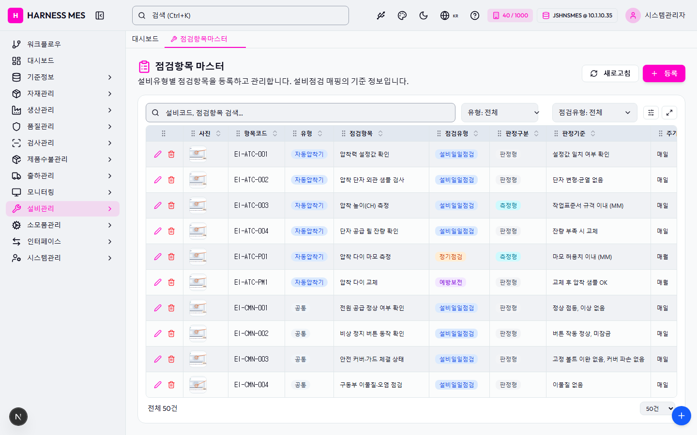

Route: /master/equip-inspect-item
Status: PASS / HTTP 200
| 기능/버튼 | 처리 방식 | 상태 | 비고 |
|---|---|---|---|
| 화면 로드 | GET /master/equip-inspect-item | 실행 | HTTP 200 |
| 초기 API 호출 | 브라우저 네트워크 수집 | 실행 | 11건 |
| 🇰🇷 | 화면 버튼 목록화 | 목록화 | 후속 메뉴별 세부 시나리오 실행 대상 |
| 시스템관리자 | 화면 버튼 목록화 | 목록화 | 후속 메뉴별 세부 시나리오 실행 대상 |
| 워크플로우 | 화면 버튼 목록화 | 목록화 | 후속 메뉴별 세부 시나리오 실행 대상 |
| 대시보드 | 화면 버튼 목록화 | 목록화 | 후속 메뉴별 세부 시나리오 실행 대상 |
| 기준정보 | 화면 버튼 목록화 | 목록화 | 후속 메뉴별 세부 시나리오 실행 대상 |
| 자재관리 | 화면 버튼 목록화 | 목록화 | 후속 메뉴별 세부 시나리오 실행 대상 |
| 생산관리 | 화면 버튼 목록화 | 목록화 | 후속 메뉴별 세부 시나리오 실행 대상 |
| 품질관리 | 화면 버튼 목록화 | 목록화 | 후속 메뉴별 세부 시나리오 실행 대상 |
| 검사관리 | 화면 버튼 목록화 | 목록화 | 후속 메뉴별 세부 시나리오 실행 대상 |
| 제품수불관리 | 화면 버튼 목록화 | 목록화 | 후속 메뉴별 세부 시나리오 실행 대상 |
| 출하관리 | 화면 버튼 목록화 | 목록화 | 후속 메뉴별 세부 시나리오 실행 대상 |
| 모니터링 | 화면 버튼 목록화 | 목록화 | 후속 메뉴별 세부 시나리오 실행 대상 |
| 설비관리 | 화면 버튼 목록화 | 목록화 | 후속 메뉴별 세부 시나리오 실행 대상 |
| 소모품관리 | 화면 버튼 목록화 | 목록화 | 후속 메뉴별 세부 시나리오 실행 대상 |
| 인터페이스 | 화면 버튼 목록화 | 목록화 | 후속 메뉴별 세부 시나리오 실행 대상 |
| 시스템관리 | 화면 버튼 목록화 | 목록화 | 후속 메뉴별 세부 시나리오 실행 대상 |
| 점검항목마스터 | 화면 버튼 목록화 | 목록화 | 후속 메뉴별 세부 시나리오 실행 대상 |
| 새로고침 | 화면 버튼 목록화 | 목록화 | 후속 메뉴별 세부 시나리오 실행 대상 |
| 등록 | 화면 버튼 목록화 | 목록화 | 후속 메뉴별 세부 시나리오 실행 대상 |
| 입력 필드 | DOM 수집 | 목록화 | 2개 |
| 선택 필드 | DOM 수집 | 목록화 | 3개 |
| 목록/그리드 | DOM 수집 | 목록화 | table 1, grid 0 |
| Method | URL | Status | OK |
|---|---|---|---|
| GET | /api/health | 200 | OK |
| GET | /api/db-info | 200 | OK |
| GET | /api/health | 200 | OK |
| GET | /api/db-info | 200 | OK |
| GET | /api/db-info | 200 | OK |
| GET | /api/auth/me | 200 | OK |
| GET | /api/system/configs/active | 200 | OK |
| GET | /api/system/comm-configs?commType=SERIAL&useYn=Y | 200 | OK |
| GET | /api/menu-categories/tree | 200 | OK |
| GET | /api/master/equip-inspect-item-masters?limit=5000 | 200 | OK |
| GET | /api/master/com-codes/all-active | 200 | OK |
requestfailed: GET https://fonts.gstatic.com/s/outfit/v15/QGYvz_MVcBeNP4NJtEtq.woff2 net::ERR_ABORTED

H HARNESS MES 🇰🇷 40 / 1000 JSHNSMES @ 10.1.10.35 시스템관리자 워크플로우 대시보드 기준정보 자재관리 생산관리 품질관리 검사관리 제품수불관리 출하관리 모니터링 설비관리 소모품관리 인터페이스 시스템관리 대시보드 점검항목마스터 점검항목 마스터 설비유형별 점검항목을 등록하고 관리합니다. 설비점검 매핑의 기준 정보입니다. 새로고침 등록 유형: 전체 유형: 공통 유형: 자동압착기 유형: 단선절단기 유형: 다선절단기 유형: 트위스트기 유형: 솔더링기 유형: 하우징기 유형: 검사기 유형: 라벨프린터 유형: 검사설비 유형: 포장기 유형: 기타 점검유형: 전체 점검유형: 설비일일점검 점검유형: 정기점검 점검유형: 예방보전 점검유형: 작업자설비점검 사진 항목코드 유형 점검항목 점검유형 판정구분 판정기준 주기 사용여부 EI-ATC-001 자동압착기 압착력 설정값 확인 설비일일점검 판정형 설정값 일치 여부 확인 매일 Y EI-ATC-002 자동압착기 압착 단자 외관 샘플 검사 설비일일점검 판정형 단자 변형·균열 없음 매일 Y EI-ATC-003 자동압착기 압착 높이(CH) 측정 설비일일점검 측정형 작업표준서 규격 이내 (MM) 매일 Y EI-ATC-004 자동압착기 단자 공급 릴 잔량 확인 설비일일점검 판정형 잔량 부족 시 교체 매일 Y EI-ATC-P01 자동압착기 압착 다이 마모 측정 정기점검 측정형 마모 허용치 이내 (MM) 매월 Y EI-ATC-PM1 자동압착기 압착 다이 교체 예방보전 판정형 교체 후 압착 샘플 OK 매월 Y EI-CMN-001 공통 전원 공급 정상 여부 확인 설비일일점검 판정형 정상 점등, 이상 없음 매일 Y EI-CMN-002 공통 비상 정지 버튼 동작 확인 설비일일점검 판정형 버튼 작동 정상, 미잠금 매일 Y EI-CMN-003 공통 안전 커버·가드 체결 상태 설비일일점검 판정형 고정 볼트 이완 없음, 커버 파손 없음 매일 Y EI-CMN-004 공통 구동부 이물질·오염 점검 설비일일점검 판정형 이물질 없음 매일 Y EI-CMN-P01 공통 구동부 윤활유 보충 및 점검 정기점검 판정형 적정 유량 유지 매주 Y EI-CMN-P02 공통 에어 필터 청소 및 교체 점검 정기점검 판정형 필터 막힘 없음 매월 Y EI-HSG-001 하우징기 하우징 공급 호퍼 잔량 확인 설비일일점검 판정형 부족 시 보충 매일 Y EI-HSG-002 하우징기 하우징 체결 걸림 감지 확인 설비